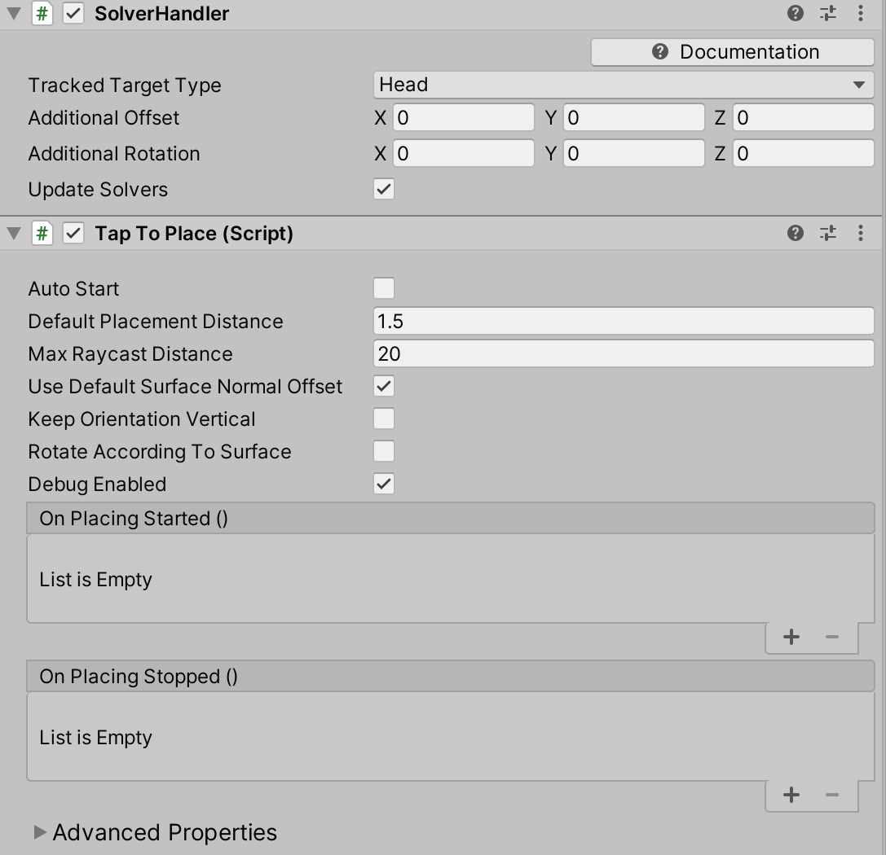

点击放置 Tap to Place

Tap to Place是一个远程交互组件，用于在表面上放置游戏对象。这个组件对于在空间网格上放置对象非常有用。点击放置使用了两次点击和头部移动的组合来放置一个对象。点击开始放置，头部移动控制对象的位置，点击将对象放置在场景中。
使用 Tap to Place
设置场景 -创建一个新的unity场景 -添加MRTK到场景导航到Mixed Reality Toolkit > Add to Scene and Configure
Note
Tap to Place使用由MRTK输入系统驱动的点击，但是它也可以不用点击来控制，请看下面的点击放置代码可配置性一节。 -添加一个立方体到场景中，将比例改为0.2，位置改为(0,0,0.7)。
将Tap to Place附加到具有碰撞器的游戏对象上

-当Tap to Place组件被添加时，一个求解程序处理程序也将被附加。点到位置来自Solver类，它需要一个Solver Handler。点击放置对象的位置是相对于Solver Handler中的
TrackedTargetType计算的。默认情况下，头部是TrackedTargetType，也就是说，当头部移动时，如果它被选中，对象也会跟着移动。TrackedTargetType也可以设置为Controller Ray，它让对象跟随控制器。Tap to Place检查器中的第一组属性是Common Solver属性。Important
Tap to Place是一个独立的Solver，不能与其他Solver连接。它不能被链接，因为SolverHandler.UpdateSolvers用于在放置对象时更新对象的位置。
- Tap to Place 属性:
Auto Start:如果为真，点击位置Solver将开始控制游戏对象的位置。对象将立即开始跟随TrackedTargetType(头或控制器射线)。必须在调用Start()之前修改该值，才能产生效果。Default Placement Distance:在SolverHandler中，一个对象被放置的默认距离(单位为米)是相对于TrackedTargetType向前的。如果表面没有被射线投射击中，游戏对象将被放置在默认的位置距离。Max Raycast Distance:基于'TrackedTargetType'原点的射线投射的最大距离(米)。这个射线寻找一个表面来放置选中的对象。Surface Normal Offset:如果射线投射命中表面，游戏物体要放置的中心和表面法线上的表面之间的距离。默认情况下，表面法线偏移量为0，但是在Start()之后，表面法线偏移量被设置为碰撞器沿z轴的范围。Keep Orientation Vertical:如果为真，要放置的游戏对象将保持垂直并与Vector3.up保持一致。Rotate According to Surface:如果为false，游戏对象将不会根据击中表面而改变旋转。当被设置为true时，物体将保持面对摄像机。Magnetic Surfaces:从最高到最低优先级执行的LayerMask数组。第一层layer mask 提供一个投射命中用于位置计算。Debug Enabled:如果为真，在Unity编辑器中，射线命中的法线将被绘制成黄色。当RotateAccordingToSurface为true时，启用调试很有用，因为它绘制表面命中的法线，这直观地解释了为什么对象被设置为当前方向。On Placing Started:当选择放置游戏对象时，这个事件会触发一次。On Placing Stopped:当游戏对象放置未被选择，放置时，这个事件被触发一次。
- Tap to Place 属性:
在编辑器中测试Tap to Place 行为 -按play键并按住空格键显示输入仿真手。 -移动手，直到立方体处于对焦状态，用输入的模拟手点击鼠标左键，模拟点击。 -如果碰撞器没有出现在场景中，对象将遵循
TrackedTargetType在定义的Default Placement Distance。 -对象在选择后会跟随TrackedTargetType的移动。在编辑器中模拟头部运动，按WASD键。按住鼠标右键改变头部旋转。 -要停止放置对象，请再次单击。单击停止位置时，对象不需要处于聚焦中。只有在开始放置过程的初始点击时才需要聚焦。TrackedTargetType: 头部(默认)TrackedTargetType: 控制器射线
Tap to Place 代码可配置性
Tap to Place 选择时间也可以通过StartPlacement() 和StopPlacement() 来控制，而不需要一个点击事件。此功能对于编写测试非常有用，并提供了在不使用MRTK输入系统的情况下在编辑器中放置对象的替代方法。
创建一个空的游戏对象
创建以下示例脚本并将其附加到空的游戏对象
using UnityEngine; using Microsoft.MixedReality.Toolkit.Utilities.Solvers; public class TapToPlaceInputExample : MonoBehaviour { private GameObject cube; private TapToPlace tapToPlace; void Start() { cube = GameObject.CreatePrimitive(PrimitiveType.Cube); cube.transform.localScale = Vector3.one * 0.2f; cube.transform.position = Vector3.forward * 0.7f; tapToPlace = cube.AddComponent<TapToPlace>(); } void Update() { if (Input.GetKeyDown(KeyCode.U)) { tapToPlace.StartPlacement(); } if (Input.GetKeyDown(KeyCode.I)) { tapToPlace.StopPlacement(); } } }在播放模式下，按U键开始放置立方体
按I键停止放置
Tap to Place 示例场景
Tap to Place示例场景由4个可替换的对象组成，每个对象都有不同的配置。示例场景包含墙壁，以显示hierarchy中默认禁用的表面放置行为。示例场景可以在 Microsoft.MixedReality.Toolkit.Unity.Examples中找到。在[发布页面](https://github.com/Microsoft/MixedRealityToolkit-Unity/releases找到unity包的例子。场景位置为:*MRTK.Examples/Demos/Solvers/Scenes/TapToPlaceExample.unity*